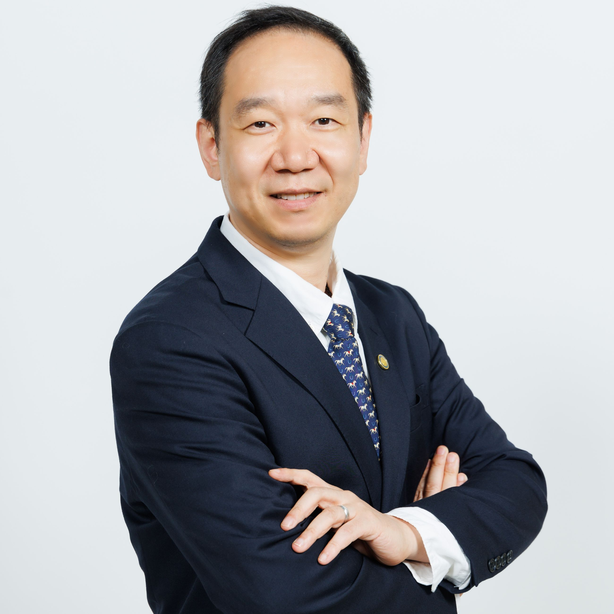

Song Guo
Independent Wikipedia-style draft preview
 Song Guo | |
| Fields | Physical AI; edge intelligence; edge computing |
|---|---|
| Workplaces | Hong Kong University of Science and Technology |
| Title | Chair professor Director of the Center of Physical AI |
| Honors | Fellow of the Royal Society of Canada; Fellow of the Canadian Academy of Engineering; Member of Academia Europaea; IEEE Fellow |
| Awards | CCF Award for Overseas Outstanding Contributions; IEEE Edward J. McCluskey Technical Achievement Award |
| Website | https://cse.hkust.edu.hk/~songguo/ |
Song Guo (Chinese: 郭嵩) is a computer scientist known for fundamental and pioneering contributions to physical AI and edge intelligence.[1] He is a chair professor at the Hong Kong University of Science and Technology, with appointments in the Department of Computer Science and Engineering, the Department of Electronic and Computer Engineering, and the Division of Integrative Systems and Design.[2] He also serves as director of the Center of Physical AI.
Education
Guo received his bachelor's degree in computer engineering from Huazhong University of Science and Technology in 1995, followed by a master's degree in the same field from Beijing University of Posts and Telecommunications in 1998. He earned his PhD in computer science from the University of Ottawa in 2005 and subsequently held an NSERC postdoctoral fellowship at the University of British Columbia in 2006.
Selected honors and awards
- Fellow of the Royal Society of Canada (2026)[3]
- CCF Award for Overseas Outstanding Contributions (CCF海外科技人物獎) (2026)[4]
- Highly Cited Researcher, Clarivate Web of Science, 2020-2026[5]
- World top 2% scientists by Stanford University, 2020-2025[6]
- IEEE Edward J. McCluskey Technical Achievement Award (2024)[7]
- Member of Academia Europaea (2022)[8]
- Fellow of the Canadian Academy of Engineering (2021)[9]
- IEEE Fellow, for contributions to high-performance and resilient edge computing (2020)[10]
- Changjiang Scholar Chair Professorship (長江學者講座教授), Ministry of Education of China (2019)[11]
Career
Since joining the Hong Kong University of Science and Technology in 2023, Guo has led research in physical AI, including intelligent robotic systems, embodied AI, and foundation models for physical-world interaction. His team has developed approaches combining embodied reasoning, predictive world models, and robotic policy learning, while exploring how robots can improve their skills and world representations through feedback.[1][12][13] In edge intelligence, his work addresses distributed machine-learning training and inference, including edge-native foundation-model services across heterogeneous, resource-constrained devices.[14][15]
Guo has held editorial leadership positions in IEEE journals. He was the inaugural editor-in-chief of the IEEE Open Journal of the Computer Society (2020–2024).[16][17] He is editor-in-chief of IEEE Transactions on Cloud Computing[18] (2025–2028). Guo has also collaborated with industry partners on the development and application of physical AI and intelligent computing technologies.[19]
Books
- Guo, Song, and Qihua Zhou. Machine Learning on Commodity Tiny Devices: Theory and Practice. CRC Press, 2022. ISBN 9781032374239.
- Guo, Song, and Zhihao Qu. Edge Learning for Distributed Big Data Analytics: Theory, Algorithms, and System Design. Cambridge University Press, 2022. ISBN 9781108832373.
- Zeng, Deze, Lin Gu, Shengli Pan, and Song Guo. Software Defined Systems: Sensing, Communication and Computation. Springer, 2020. ISBN 9783030329419.
- Gu, Lin, Deze Zeng, and Song Guo. Cloud Networking for Big Data. Springer, 2015. ISBN 9783319247182.
- Li, Peng, and Song Guo. Cooperative Device-to-Device Communication in Cognitive Radio Cellular Networks. Springer, 2014.
References
- ↑ “Song Guo 郭嵩”. Department of Computer Science and Engineering, Hong Kong University of Science and Technology. Retrieved 2 October 2026.
- ↑ “Song Guo”. HKUST Research Portal. Hong Kong University of Science and Technology. Retrieved 2 October 2026.
- ↑ “Royal Society of Canada: 2026 New Members” (PDF). Royal Society of Canada. 2026. p. 32. Retrieved 2 October 2026.
- ↑ “2026年度「CCF海外科技人物獎」評選結果公告” (in Chinese). China Computer Federation. 8 October 2026. Retrieved 13 October 2026.
- ↑ “Past Lists of Highly Cited Researchers”. Clarivate. Retrieved 9 November 2026.
- ↑ “Updated science-wide author databases of standardized citation indicators”. Ioannidis, John P. A. Elsevier Data Repository. doi:10.17632/btchxktzyw. Retrieved 9 November 2026.
- ↑ “Edward J. McCluskey Technical Achievement Award”. IEEE Computer Society. Retrieved 2 October 2026.
- ↑ “Guo Song”. Academia Europaea. Retrieved 2 October 2026.
- ↑ “Guo, Song”. Canadian Academy of Engineering Directory. Retrieved 13 October 2026.
- ↑ “IEEE Computer Society Announces 2020 Fellows”. IEEE Computer Society. 9 December 2019. Retrieved 2 October 2026.
- ↑ “Changjiang Scholar Chair Professor”. PolyU Scholars Hub, The Hong Kong Polytechnic University. Retrieved 9 November 2026.
- ↑ Zhu, Fangqi; Wu, Hongtao; Guo, Song; Liu, Yuxiao; Cheang, Chilam; Kong, Tao (2025). “IRASim: A Fine-Grained World Model for Robot Manipulation”. Proceedings of the IEEE/CVF International Conference on Computer Vision. pp. 9834–9844. doi:10.1109/ICCV51701.2025.00917.
- ↑ “WMPO: World Model-based Policy Optimization for Vision-Language-Action Models”. Zhu, Fangqi; Yan, Zhengyang; Hong, Zicong; Shou, Quanxin; Ma, Xiao; Guo, Song (2026). International Conference on Learning Representations. Retrieved 9 November 2026.
- ↑ “On the Edge of Innovation: A Conversation with Song Guo Technical Achievement Award Recipient”. IEEE Computer Society. 25 March 2024. Retrieved 2 October 2026.
- ↑ “The MoE-Empowered Edge LLMs Deployment: Architecture, Challenges, and Opportunities”. Li, Ning; Guo, Song; Zhang, Tuo; Li, Muqing; Hong, Zicong; Zhou, Qihua; Yuan, Xin; Zhang, Haijun (2025). IEEE Communications Magazine. 63 (12): 164–171. doi:10.1109/MCOM.001.2400717. Retrieved 9 November 2026.
- ↑ “Song Guo Appointed Editor in Chief for the New IEEE Open Journal of the Computer Society”. IEEE Computer Society. 19 November 2019. Retrieved 2 October 2026.
- ↑ “Editors in Chief Confirmed for IEEE Computer Society Publications”. IEEE Computer Society. 3 March 2023. Retrieved 9 November 2026.
- ↑ “Transactions on Cloud Computing Editor-in-Chief”. IEEE Systems Council. Retrieved 9 November 2026.
- ↑ “HKUST and CalmCar Establish the Physical AI Innovation Center”. Hong Kong University of Science and Technology. 3 June 2026. Retrieved 9 November 2026.